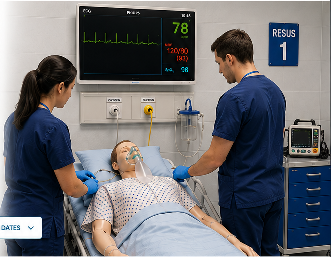

Simulation training
Procedural
Sedation
Simulation Training
Practical, small-group simulation training for anaesthetic and emergency medicine trainees.
Develop the knowledge, clinical skills and confidence to provide safe procedural sedation for ASA 1 and 2 patients.

Half-day sessions
Focused, immersive learning experience
Small-group learning
Practical, hands-on training in a supportive environment
Simulation-based
Realistic scenarios to build skills and decision-making
Experienced faculty
Multidisciplinary clinicians with expertise in sedation and perioperative care
Course details
Practical training for safe procedural sedation
Our half-day simulation course provides a supportive environment to practise procedural sedation and manage the complications that can arise.
Running since 2022.
Through realistic simulation and facilitated debriefing, the course focuses on:
- Patient assessment and preparation
- Safe delivery and monitoring of procedural sedation
- Recognition and management of complications
- Airway management and escalation
- Communication, teamwork and human factors
2026–27 programme
Upcoming course dates
FAQ
Frequently asked questions
Who is the course aimed at?
The course is aimed at anaesthetic and emergency medicine trainees who are involved in, or preparing to deliver, procedural sedation.
Do I need previous procedural sedation experience?
No specific level of previous sedation experience is required. The small-group format allows teaching and discussion to be adapted to participants' experience.
What is the course format?
The course is delivered as a half-day, simulation-based session with facilitated debriefing and practical discussion.
What happens after I register my interest?
The course team will contact you regarding availability and confirmation of a place.
Ready to secure your place?
Register your interest via our simple online form.